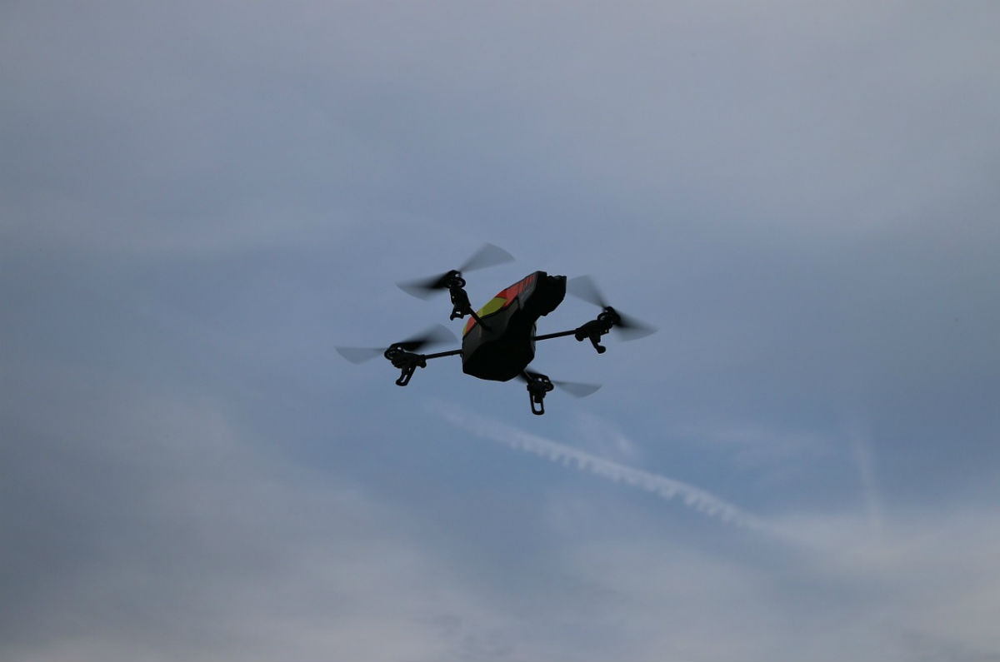
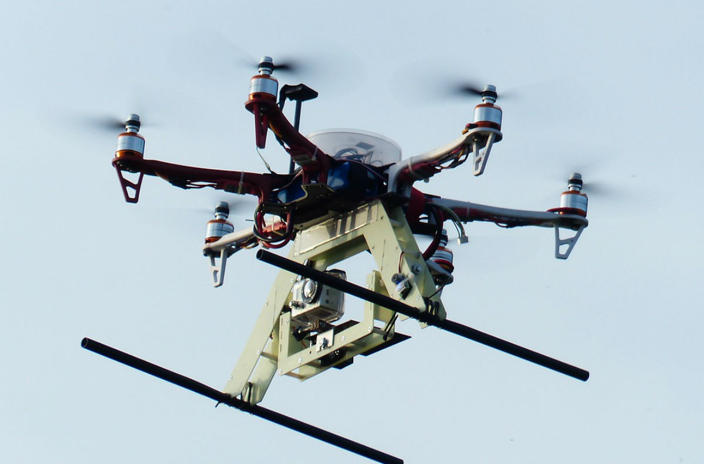

Safety
Current FAA regulations focus heavily on the safety of the drone itself.
For all but recreational users, the drone must first be proved airworthy
and then be granted an FAA certification or an airworthiness statement from
the Department of Defense.
Although these are steps in the right direction,
the hard truth is that UAV technology is racing ahead of the policy makers,
making it almost impossible to impose updated safety regulations.
Despite
heavy regulations, drones can still pose a great risk to public safety as they
can operate in airspaces used by commercial and private aircraft. This concern
is amplified by the fact that, at this time, UAVs are unable to recognize and
avoid other aircraft. In June 2015, a hobby UAV was flying over a California
wildfire and forced a firefighting plane to land, keeping the firefighters
from performing their life-saving job. According to the FAA, in 2015, 650
airplane pilots reported seeing UAVs while flying. Worst case scenario, a plane
full of passengers could crash to the ground because a small drone was flying
where it wasn’t supposed to be.
On top of this, currently there are
significant vulnerabilities in UAV operating systems, allowing for the all too
real possibility of GPS-jamming, hacking, and cyber-terrorism.
By attaching
firearms, drones could also become dangerous weapons. In May 2015, a video was
published by Austin Haughwout that showed just that. This would remove criminals
from the crime scene, even allowing them to pre program flight paths or target
specific people once facial recognition software becomes ubiquitous, making the
lives of law officials even more difficult.
Privacy
Due to UAS technology’s capability of flying to heights beyond the range of
sight of the average person, possible miniature size, maneuverability, and
decreasing noise production, drones are able to survey places without notice.
This creates significant privacy issues. In the wrong hands, drones could be
used to gather extensive information and even blackmail, from credit card
information to indecent photographs.
A particular concern has arisen due to
government use of UAS technology. Multiple United States law enforcement
offices have purchased UAVs, including Seattle, WA and Montgomery, TX. Citizens
are worried they will violate individual’s privacy by looking into houses and
tailing suspects. This would arguably be violating the 4th amendment of the
constitution. Thankfully, motions have been made to prevent misuse of drones
by police and other officials. The House of Representatives prohibited the use
of evidence collected by drones without a warrant to be used in the court by
amending the National Defense Authorization Act of 2013. We still have a long
way to go, however, to complete security.
Drones could also be used by
criminals to tail victims, steal information and belongings, and gather
blackmail-worthy material. If you think drones are not technically capable of
doing this, you are very wrong. Drones can be equipped with the very best
imaging technology, providing the capability of obtaining very detailed
photographs.